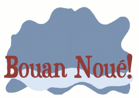

Moussieu l'Editeu,
Mardi au sé, la Merrienne me d'mandit tchèsque j'allais êcrithe pour Les Chroniques chutte semaine.
"Eh bein," j'l'y dit, "je n'sais pas trop, mais y n'faut pas oublié qu'ch'est Nouë, et j'm'en vais qu'menchi par faithe nos compliements à Moussieu de Laquaine et l'y souhaité un bouon Nouë."
"Vèthe, sans doute," ou dit, "et y'en a d'autres étout tch'y n'faut pas oublié. Par exemplye, y'a touos les membres de notre famillye. Il est vrai qu'y'en a parmi yeaux tch'y m'ont fait mârri pûs d'eune fais dans l'couothant d'l'année, mais à la saison tch'il est y faut oublié chonna."
"Sans doute," je l'y dit, "mais y fait ma, quand même d'avé à souhaité un bouon Nouë à chu fripon d'Laiesse, tch'y vendit chutte vaque tchi donnait au tout pûs siez quartes de lait par jour. Etout y'a L'Bram, le pendloque, tch'y m'dait ocquo pour les chent câsses de s'menche que j'y'avais vendu y'a deux ans. Mais, enfîn, y faut les mettre avec le restant, et p't'être que l'année tchi veint j'éthais une chance de la jouë de tchique manièthe. Et tandis qu'j'y sommes, Merrienne, je fthons aussi bein de souhaité un bouon Nouë ès membres d's'Etats."
"Oh, arrête un mio," ou s'fit. "Y'en a parmi yeau, sans autchune doute tch'y sont de vrais Mêssieux, mais y'en a étout tch'y n'ont pas grande idée, et tch'y sont tréjous bein trop prêts à gaspillyi nos sous. Ch'nest pas pour dithe que je s'sais contente de ouï tch'ils avaient yeu tchique avârie l'jour de Nouë, mais si y'en avait une doûzaine ou d'même au liet Sam'dit souffrant d'indigestion, je n'me mett'raits pas à pieuthé. Avec chonna, y faut éspethé tch'y fthont mûs l'année tchi veint, et lûs souhaité étout un bouon Nouë. Ch'est près que à contre-tchoeu que je m'y'accorde, mais je n'veur pas avé d'mauvais sentîments contre autchune personne ach'teu."
"Tu dév'thais savé, Ph'lip," ou dit. "Un bouon Nouë ès fèrmiers de Jêrri!"
"Tu'as raison, Merrienne," j'l'y dit, "mais pour yeux nou dévthait dêshallé la bouteillye que tu'as dans l'armouaithe."
"N'té gène pas d'la bouteillye," ou dit. "Ou n'enhann'na pas pour un jour ou deux. Quant ès férmiers, j'admets qu'y'en a tch'y n'valent pas quatre sous, mais la pliupart ch'est d'bouons Jêrriais, tch'y font d'lûs mûs et tch'y ne d'mandent pas à la tèrre pûs qu'ou n'peut produithe. Mais, Ph'lip, quand nou pâsle des férmiers, combain d'nos férmes appartcheinnent achteu à chais Angliais? Avec tout l'bouon-voulé du monde, je n'crais pas que j'peux souhaité autchune chose de bouon à chais gens-là. Y veinnent ichin avec eune mâsse de sous et n'sé fichent pas mal combain tch'y paient pour une ferme. Le Jêrriais tch'y s'sait prêt à la prendre à un prix raisonnablye n'a autchune chance. Ch'est pourtchi, un bouon Nouë ès férmiers Jêrriais, et banq'route ès autres."
J'châtchit la tête. "Nouffé, Merrienne, nou n'peut pas faithe ditet. Ch'est bein du, j'admets, d'vais d'bouonnes fermes vendues à d's'Angliais, et des fils d'férmis cherchant des fermes sans pouvé en trouvé, mais, après tout, ch'est Nouë, et j'ai tréjous ouï que la rantchune ne paie pas d'intéthets."
"Ch'est vrai assez," ou dit, après tchiques instants. "J'ai yeu tort, Ph'lip. Un bouon Nouë ès férmiers de Jèrri, tant comme y y'en a."
"Y faut en fini," j'l'y dit, "car ma pliume qu'menche à s'lâssé. Souhaitons, té et mé, bouonnefemme, un bouon Nouë à tout Jêrri."
"Ch's'y t'ôv té là!" dit la Merrienne.
Ph'lip
Les Chroniques de Jersey 26/12/1953
Viyiz étout: